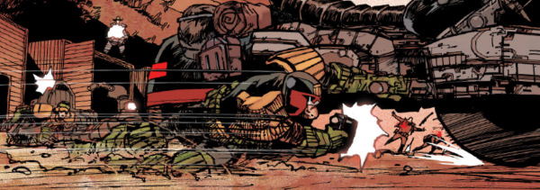

Rico is a younger clone of Judge Fargo (not to be confused with Dredd's same-aged clone brother Rico). There's been an oft-mooted idea that another Fargo bloodline clone would effectively replace Dredd (which was attempted, disastrously, with the ex-Judda Kraken), but Rico deliberately dropped the Dredd name and has forged his own career.
Art by Henry Flint
| Story Title | Parts | Pages | w indicates a wraparound coverCovers | Year(s) | Issues | Writer | Artist | Colourist | Letterer |
|---|---|---|---|---|---|---|---|---|---|
From Judge DreddDredd Angel | 7 | 46 | 377: Ron Smith 380: Ron Smith 382: Ron Smith 3 | 1984 | 377-383 | Alan Grant John Wagnervarious | Ron Smith | <-- 14pp, [b&w] | Tom Frame |
From Judge DreddBlood Cadets | 3 | 18 | 1187: Cliff Robinson & Chris Blythe (with apologies to George Lucas) 1 | 2000 | 1186-1188 | John Wagner | Simon Fraser | Gary Caldwell | Tom Frame |
From Judge DreddSector House | 8 | 48 | 1215: Trevor Hairsine and Chris Blythe 1219: Trevor Hairsine and Chris Blythe 1222: Cliff Robinson 3 | 2000 | 1215-1222 | John Wagner | Carlos Ezquerra | <-- | Tom Frame |
From Judge DreddLeaving Rowdy | 1 | 12 | 0 | 2002 | Reprints: SFS251280 | John Wagner | Carlos Ezquerra | <-- | Tom Frame |
From Judge DreddLove Story III: The End of the Affair | 1 | 6 | 0 | 2002 | 1281 | John Wagner | Ian Gibson | <-- | Tom Frame |
From Judge DreddProdigal | 1 | 12 | 0 | 2004 | Reprints: M339 (supplement)M216 | Gordon Rennie | Simon Davis | <-- | Tom Frame |
From Judge DreddBrothers of the Blood | 4 | 24 | 1380: Carlos Ezquerra 1 | 2004 | 1378-1381 | John Wagner | Carlos Ezquerra | <-- | Tom Frame |
From Judge Dredd Featuring SJS Judge Ishmael.Gulag | 5 | 30 | 1385: Charlie Adlard and Chris Blythe 1 | 2004 | 1382-1386 | Gordon Rennie | Charlie Adlard | Chris Blythe | Tom Frame |
From Judge DreddVisiting Hour | 1 | 6 | 0 | 2005 | 1423 | Gordon Rennie | Anthony Williams | <-- | Tom Frame |
From Judge DreddBlood Trails | 10 | 60 | 0 | 2005 | 1440-1449 | Gordon Rennie | Andrew Currie | Chris Blythe | Tom Frame |
From Judge DreddClass of '79 | 1 | 12 | 0 | 2005 | p2006 | John Wagner | Greg Staples | Peter Doherty | Tom Frame |
From Judge DreddVersus | 1 | 6 | 0 | 2006 | 1499 | Simon Spurrier | Peter Doherty | <-- | Peter Doherty |
From Judge DreddFifty-Year Man | 1 | 12 | Henry Flint 1w | 2007 | 1536 | John Wagner | Patrick Goddard | Chris Blythe | Annie Parkhouse |
From Judge DreddThe Facility | 1 | 6 | Colin MacNeil 1 | 2007 | 1546 | John Wagner | Colin MacNeil | Chris Blythe | Annie Parkhouse |
From Judge DreddThe Secret of Mutant Camp 5 | 2 | 12 | 0 | 2007 | 1547-1548 | John Wagner | Colin MacNeil | Chris Blythe | Annie Parkhouse |
From Judge DreddKoan | 1 | 10 | 0 | 2008 | Reprints: M416 (supplement)M278 | Al Ewing | Paul Marshall | Chris Blythe | Annie Parkhouse |
From Judge DreddTour of Duty | 6 | 36 | 1653: Dave Taylor 1 | 2009 | 1650-1655 | John Wagner | Colin MacNeil | Chris Blythe | Annie Parkhouse |
From Judge Dredd Main subtitle: "Tour of Duty".Interlude - Mega-City One | 1 | 6 | 0 | 2009 | 1656 | John Wagner | PJ Holden | Chris Blythe | Annie Parkhouse |
From Judge Dredd Main subtitle: "Tour of Duty".The New Deal | 1 | 6 | 0 | 2009 | 1657 | John Wagner | Mike Collins | Chris Blythe | Annie Parkhouse |
From Judge Dredd Main subtitle: "Tour of Duty".Pink Eyes | 5 | 30 | 1659: Neil Roberts 1 | 2009 | 1659-1663 | John Wagner | Mike Collins | Chris Blythe | Annie Parkhouse |
From Judge Dredd Part of the "Tour of Duty" arc.Invitation to a Hanging | 1 | 10 | Anthony Williams 1 | 2009 | M291 | Al Ewing | Patrick Goddard | Chris Blythe | Annie Parkhouse |
From Judge Dredd Main subtitle: "Tour of Duty".Gore City | 5 | 30 | 1664: Carlos Ezquerra 1 | 2009-2010 | 1664-1665, P2010, 1666-1667 | John Wagner | Colin MacNeil | Chris Blythe | Annie Parkhouse |
From Judge Dredd Main subtitle: "Tour of Duty".The Talented Mayor Ambrose | 13 | 78 | 1681: Ben Willsher 1684: Cliff Robinson 2 | 2010 | 1674-1686 | John Wagner | John Higgins | Sally Hurst | Annie Parkhouse |
From Judge Dredd Main subtitle: "Tour of Duty".Mega-City Justice | 7 | 42 | 1690: Greg Staples 1 | 2010 | 1687-1693 | John Wagner | Carlos Ezquerra Hector Ezquerravarious | <-- | Annie Parkhouse |
From Judge DreddBlaze of Glory | 1 | 10 | 0 | 2010 | Reprints: M416 (supplement)M305 | Al Ewing | Liam McCormack-Sharp | <-- | Annie Parkhouse |
From Judge Dredd Part of the Day of Chaos arc.The Days After | 1 | 6 | 0 | 2012 | 1789 | John Wagner | Henry Flint | Chris Blythe | Annie Parkhouse |
From Judge Dredd Part of the Every Empire Falls arc. Followed by: ‑ Dust to Dust in the Meg. ‑ The Lion's Den in the prog.The Grindstone Cowboys | 5 | 30 | 1975: Brendan McCarthy 1 | 2016 | 1973-1977 | Michael Carroll | Colin MacNeil | Len O'Grady | Annie Parkhouse |
From Judge Dredd Part of the Every Empire Falls arc. Preceded by The Grindstone Cowboys in the prog. Followed by From the Ashes in the Meg.Dust to Dust | 3 | 30 | 0 | 2016 | M371-M373 | Michael Carroll | Henry Flint | <-- | Annie Parkhouse |
From Judge Dredd Part of the Every Empire Falls arc. Preceded by The Lion's Den in the prog.Reclamation | 5 | 30 | 1986: Tom Foster 1990: Jake Lynch 2 | 2016 | 1986-1990 | Michael Carroll | Colin MacNeil | Len O'Grady | Annie Parkhouse |
From Judge Dredd Features a cameo from Barney and also float parade balloons of: ‑ Dave the Orangutan ‑ Judge Fish ‑ Giant of the Harlem Heroes ‑ Fergee ‑ Otto Sump Boxing Day | 1 | 12 | 0 | 2016 | 2011 | Rob Williams | Chris Weston | <-- | Annie Parkhouse |
From Judge DreddThe Samaritan | 4 | 24 | 0 | 2019 | 2136-2139 | Kenneth Niemand | Staz Johnson | Chris Blythe | Annie Parkhouse |
| year | episodes | pages |
| 1982 | 0 | 0 |
| 1983 | 0 | 0 |
| 1984 | 7 | 46 |
| 1985 | 0 | 0 |
| 1986 | 0 | 0 |
| 1987 | 0 | 0 |
| 1988 | 0 | 0 |
| 1989 | 0 | 0 |
| 1990 | 0 | 0 |
| 1991 | 0 | 0 |
| 1992 | 0 | 0 |
| 1993 | 0 | 0 |
| 1994 | 0 | 0 |
| 1995 | 0 | 0 |
| 1996 | 0 | 0 |
| 1997 | 0 | 0 |
| 1998 | 0 | 0 |
| 1999 | 0 | 0 |
| 2000 | 11 | 66 |
| 2001 | 0 | 0 |
| 2002 | 2 | 18 |
| 2003 | 0 | 0 |
| 2004 | 10 | 66 |
| 2005 | 12 | 78 |
| 2006 | 1 | 6 |
| 2007 | 4 | 30 |
| 2008 | 1 | 10 |
| 2009 | 17 | 106 |
| 2010 | 23 | 142 |
| 2011 | 0 | 0 |
| 2012 | 1 | 6 |
| 2013 | 0 | 0 |
| 2014 | 0 | 0 |
| 2015 | 0 | 0 |
| 2016 | 14 | 102 |
| 2017 | 0 | 0 |
| 2018 | 0 | 0 |
| 2019 | 4 | 24 |
| 2020 | 0 | 0 |
| 2021 | 0 | 0 |